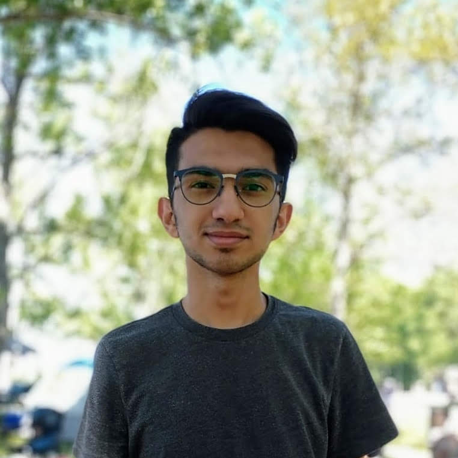

Saahil Jaffer
Honours Computer Science Student at University of Waterloo
More information can be found on my resume
Work Experience
Software Engineer Intern
360 Education Labs, Toronto, Ontario
Testing and Automation
Junior Game Developer
Treasured, Markham, Ontario
- Created a virtual museum in Unity that allowed users to showcase the legacy of their loved ones
- Designed a working prototype to show how museums can be used to retain people's legacies
- Worked in an agile development environment, utilizing Unity version control and C#
- Identified, tested, and implemented new controllers for customers to interact in virtual reality
Skills
Languages
C++, C, Java, Scheme, HTML, CSS, VBA
Tools and Frameworks
Latex, Github, Linux, Raspberry Pi, Arduino, Unity
Featured Projects
Automatic Plant Watering System
Quest Conference, Richmond Hill, Ontario
- Identified and developed a solution to ensure that plants always have the required resources for survival
- Improved the chances for the plant's survivaly using a Raspberry Pi and moisture sensors
CD Collection Manager
Richmond Hill, Ontario
- Produced a data management system in Java to allow users to organize their music collection
- Increased efficiency by 80% for storing and accessing data using improved data structures
Leadership Experience
Assistant Treasurer
Jaffari Islamic Youth, Vaughan, Ontario
- Organized and ran multiple events with around 100 participants
- Optimized profits by creating efficient budgets in Excel and tracking revenue
FCL HackingSTEM Student Ambassador
Microsoft, Toronto, Ontario
- Assisted young kids in building their own robotic finger models
- Demonstrated how to measure the dexterity of their robotic finger
- Troubleshooted and fixed models that would not communicate with the microcontroller
Youth Leader
Toastmasters International, Vaughan, Ontario
- Participated in an eight-week long communication and leadership skill program
- Prepared and presented multiple speeches to a an audience of 25 people
Education
Candidate for Bachelor of Computer Sciece, Honours Computer Science
University of Waterloo, Waterloo, Ontario